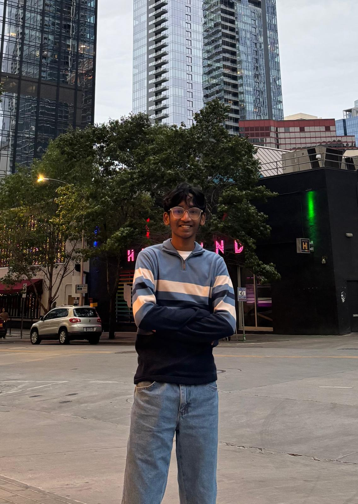

UT Arlington · Mechanical Engineering
Sohan Sai
Vanam
Mechanical Engineering student at UT Arlington
I’m into mechanisms, robotics, and figuring out how things work. Usually in SolidWorks; sometimes under a car. Here’s what I’ve been building and learning.

Arlington, TexasCAD → Build → TestCars & motorsport